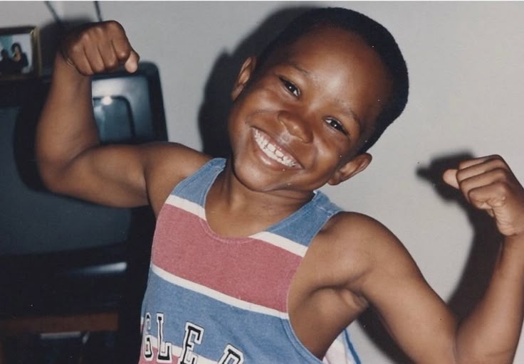
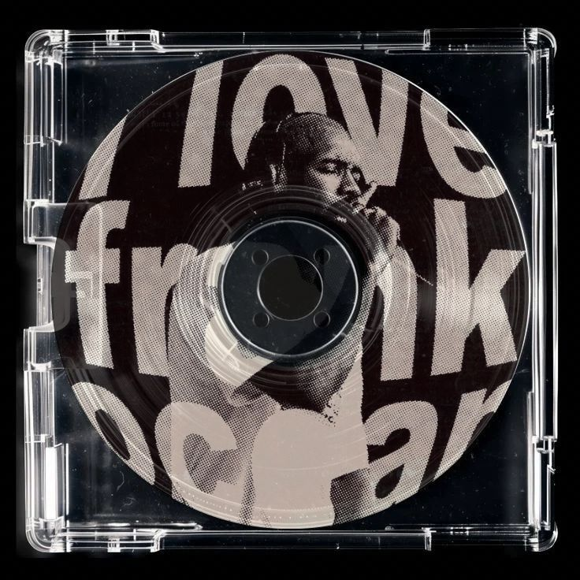

Biografia

Frank Ocean (nome artístico de Christopher Edwin Breaux) é um cantor, compositor e produtor musical norte-americano nascido em 28 de outubro de 1987, em Long Beach, Califórnia. Ele passou parte da infância na Louisiana, onde teve contato com diferentes estilos musicais que influenciaram sua carreira. Iniciou sua trajetória musical escrevendo músicas para outros artistas e ganhou destaque ao se juntar ao coletivo Odd Future. Em 2011, lançou a mixtape Nostalgia, Ultra, que chamou atenção da indústria musical. Seu primeiro álbum oficial, Channel Orange (2012), foi um grande sucesso e lhe rendeu um Grammy. Em 2016, lançou Blonde, um álbum experimental e muito aclamado pela crítica, considerado uma de suas obras mais importantes. Frank Ocean é conhecido por seu estilo inovador, letras introspectivas e por ser uma das figuras mais influentes do R&B contemporâneo.
Discografia

A discografia de Frank Ocean inclui o mixtape Nostalgia, Ultra (2011), que trouxe faixas como “Novacane” e “Swim Good”; os álbuns de estúdio Channel Orange (2012), com músicas como “Thinkin Bout You”, “Pyramids” e “Lost”, e Blonde (2016), também conhecido como Blond, com destaques como “Nikes”, “Self Control” e “Ivy”; além do projeto visual Endless (2016), mais experimental. Ele também lançou singles importantes fora de álbuns, como “Chanel” (2017), “Biking” (2017), “Provider” (2017), “DHL” (2019) e “In My Room” (2019), e fez parte do coletivo Odd Future.
Atualmente

Frank Ocean não lança um álbum completo desde Blonde (2016), mas continua ativo de forma mais discreta e criativa. Atualmente, ele trabalha em novos projetos musicais sem divulgação oficial, além de estar envolvido no desenvolvimento de um filme próprio como diretor, mostrando interesse em expandir sua atuação para o cinema. Fora da música, ele também é empresário e designer, através da marca de luxo Homer, focada em joias e peças exclusivas. Mesmo com poucas aparições públicas, ele ainda mantém presença na cultura musical, especialmente por meio do Blonded Radio, onde às vezes compartilha músicas e conteúdos especiais.